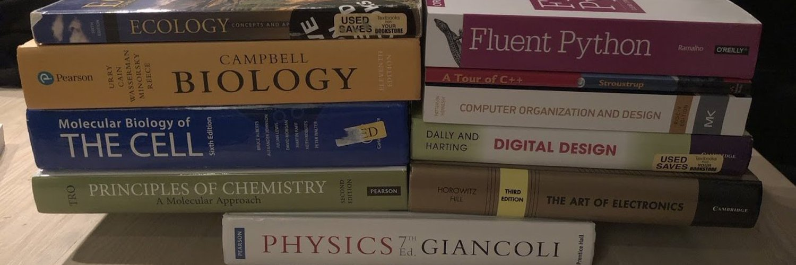

Computational Biology PhD Student
Massachusetts Institute of Technology, USA
Email: samsl@mit.edu
GitHub: samsledje
Twitter: @samsledzieski
Google Scholar
I'm a PhD student in Electrical Engineering and Computer Science at the Massachusetts Institute of Technology. I currently work in the Computation and Biology group at the Computer Science and Artificial Intelligence Lab. My current research uses large protein language models (PLMs) for various protein structure related tasks, including predicting protein interactions from amino acid sequence and drug-target interaction prediction.
Previously, I was a member of the Computational Biology Research Lab at the University of Connecticut, where my research focused on phylogenetic methods for understanding infectious disease. I also worked on mapping horizontal gene transfer in SARS-CoV-2.
